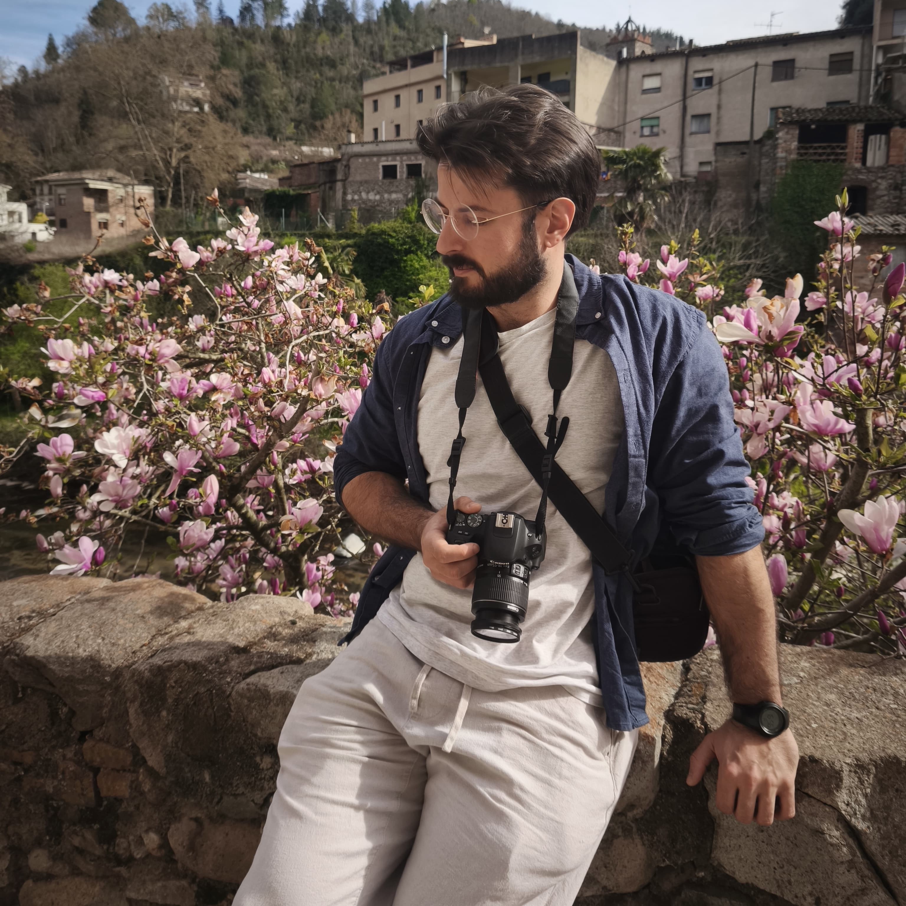

Este fichero es el primer ejercicio práctico del curso de JS y HTML impartido por Federico Garay en Udemy.

Jesús Villaverde del Castillo nació el 3 de marzo de 1992 en Donostia, capital de Guipúzkoa, provincia de Euskadi. A los 5 años se mudó con su
familia al municipio barcelonés de Gavà, y a los 15 años se volvió a mudar a Vigo, cerca de su familia paterna. Allí viviría hasta
que cumplió 20 años, cuando regresó a su anterior vivienda en Gavà.
Cuando era pequeño le encantaba jugar a juegos de construcción. En general, le fascinaban los juegos de lógica y las máquinas complejas.
Se pasaba horas jugando con sus kits de K'Nex, reproduciendo las construcciones y las máquinas que enseñaban a construir los libritos de las guías.
Se podría decir que apuntaba maneras de ingeniero. Después del K'Nex apareció en su vida el Mecano, que le producía fascinación por el realismo
que imprime el material metálico y las tuercas y tornillos que imitan a la consturcción de las máquinas reales.
Durante la primaria, mostraba predilección por las asignaturas de matemáticas, música y educación física. Un recuerdo que atesora con cariño es
el de escuchar en una clase de músicas sobre la figura del canon, una pieza musical que dejó una muy profunda impresión en él. Durante muchos años
vivió con el enigma del título de aquella obra, hasta que casi 20 años después, la que fue su profesora de música le ayudó a descubrir que aquella
canción era Le Chant des Oiceaux de Clément Janequin. La música, por la cual tenía una especial sensibilidad, comenzó a ser una pasión para Jesús muy tierna edad.
Otra de sus pasiones incipientes fueron los videojuegos, afición que le ha acompañado toda su vida y junto a la cual ha desarrollado una elaborada visión
sobre el mundo que le rodea. Gracias a que su hermano comprara una PS1 que llevó a piratear, lo cual permitió tener una riquísima biblioteca variada de videojuegos
de manera asequible, Jesús adquirió una rica cultura de videojuegos. Desde entonces comenzó a considerar que los videojuegos son mucho más que
mero entretenimiento, y que pueden ser también una sofisticada forma de arte y de ingenio, con la capacidad de abrir y entrenar la mente de
las personas. Después de la PS1, tuvieron la PS2 con la misma dinámica. Jesús disfrutó de la edad de oro de los videojuegos de Sony.
Simultáneamente, disfrutaba de juegos de PC en el ordenador que le compró su hermano. Sus géneros favoritos eran los juegos de construcción de ciudades,
gestión de recursos y de estrategia militar. Quizás, los juegos en los que más horas invirtió por esta época fueron el Starcraft, el Patrician III,
El Imperium y el Command & Conquer: Red Alert, aunque tampoco dejaba de jugar a otros estilos como RPG, shooters y simuladores de conducción, especialmente en consola.
De adolescente, le seguía fascinando la ingeniería, las ciencias, el espacio y la filosofía, la música y el mundo militar. Le obsesionaba la idea de volar;
soñaba con ser astronauta, piloto comercial o piloto de caza.
A los 12 años, su hermano le regaló una guitarra española con la que empezó su infructífera carrera como guitarrista amateur. Más tarde
obtendría si primera de varias guitarras eléctricas, con la que aprendería a tocar estilos de música metal. Durante su adolescencia, compartía
con sus amigos la afición por el cine, la música y los videojuegos. Además, practicaba artes marciales y comenzó también su afición por el levantamiento de pesas.
Cuando cumplió la mayoría de edad, trabajó varios años como camarero, aprendiendo lo que es el trabajo duro.
Durante su veintena, ingresó en la Universidad de Barcelona para estudiar Antropología Social y Cultural, una carrera que ha nutrido enormemente
su cosmovisión y su filosofía de vida. Después del grado, realizó el máster de Humanidades Digitales, tras lo cual se metió de lleno en el mundo de
la programación, con el que siempre ha coqueteado, pero esta vez con una dedicación y pretensiones profesionales.
Clicando aquí volvemos a la frontpage.